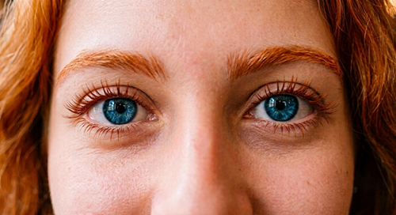

Azul
Publicado en septiembre de 2026Yo no sé describir sus ojos, ni describir su mirada, ni tampoco sé decir todo lo que ocurre en mi interior cuando, azul, me mira.
¿Sabes el cielo de verano cuando atardece? ¿O el color profundo del mar? Así es ella cuando mira, así son sus ojos, su mirada limpia, alegre, fresca, azul. Y me mira y sonríe y yo, sin saber completamente cómo, llego a comprender entonces que la felicidad existe. Y la felicidad es azul como el cielo de verano, azul como sus ojos que son profundos como el mar, es azul como su mirada es azul.
Y yo también sonrío, y sonríe mi corazón, que de puro enamorado de ella es ahora azul. Y ella habla, y sonríe, y sus manos peinan su pelo y cogen las mías y bailan en el aire azul de su mirada. Cierro por un instante mis ojos y en mi mente quedan grabados a fuego los suyos, y grabada a fuego su sonrisa y con fuego se graba ella en mi corazón. Todo a mi alrededor es ahora azul; la gente que camina por el parque, el olor de la hierba recién cortada, el Sol que comienza a hundirse por el horizonte y la Luna que ya no será blanca nunca más para mí, nunca más después de haber visto sus ojos.
Bajo el azul estelar de esta noche nos besamos y al besarnos cierra sus ojos azules como el Sol y como la Luna y como las estrellas, azules como el olor de esta noche de verano.
Pero sí que sé que ese color no me dejará nunca, porque ese azul de sus ojos ya está grabado, como ella, en mi corazón.